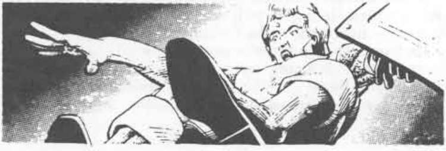

奥格·嫩申 · Org Nenshen
奥格·嫩申 Org Nenshen
灰鹰自由城盗贼公会会长
 |
|
奥格·嫩申与奈罗夫·加斯加尔同时在盗贼公会中逐渐崭露头角。两人经常一起工作。奈罗夫遭遇法师魔法陷阱的那次灾难性行动中，奥格也在场；事实上，是奥格发现了面带恐惧、昏迷不动的奈罗夫。奥格帮助支付了让朋友恢复的牧师援助费用，并暗中不懈地推动奈罗夫的政治生涯。
随着奥格在盗贼公会中晋升，他的名字成了鲁莽自信和技巧的代名词。当在任公会会长去世时，奥格几乎一致地被宣布为公会会长，而公会也在他的领导下繁荣发展。
奥格不确定自己的出生地。父母在他出生后不久去世，婴儿奥格由灰鹰城的表亲拉明收养。贪婪的拉明很快表明，收养奥格的意图是通过强迫这个孩子为自己偷窃，让自己过上奢侈生活。
正如拉明本该预料的那样，这种行为引起了盗贼公会的注意。一名极其愤怒的公会会长派了几名壮硕盗贼，把拉明和他年轻的保护对象带到公会，回答他们的盗窃行为。拉明最终承认了这种卑劣做法，公会会长不得不被人强行拦住，才没有攻击这个企图培养盗贼大师的人。惊恐的拉明很庆幸自己还活着被交给了当局。随后盗贼把注意力转向年幼的奥格。
盗贼们很容易赢得孩子的信任，也毫不费力地让小奥格接受了一系列测试；测试结果让他们确信，这个孩子天生就是盗贼。
奥格人生中最美好的阶段就此开始。作为盗贼公会的学徒，他以令老师满意的热忱学习了教给他的一切。他很快证明自己擅长挤进连成年人都无法进入的缝隙。在十六岁以前，奥格·嫩申就已经是一名一级盗贼，在公会内部受到上司尊敬，并迅速晋升。
在这段时间里，奥格与奈罗夫·加斯加尔建立了友谊。两个年轻人是势均力敌的竞争者，却也是亲密朋友。他们经常一起工作；奈罗夫冷静、有条理的方法，中和了奥格更加张扬、热烈的风格。作为“恐怖二人组”，他们从任何一个符合公会规则的受害者手中大把大把地攫取战利品：没有购买免遭盗窃保护的人，以及公会不喜欢的人，都是公平的目标。
奈罗夫和奥格晋升得如此稳定，以至于公会的一些成员暗自庆幸奈罗夫的恐高症迫使他转入政治。他们原本预见两位朋友会为了最终的公会会长之位展开激烈争斗。盗贼公会反而幸运地拥有了两名忠诚成员在灰鹰政府中任职。
作为公会会长，奥格的目标是与执政寡头合作，保障灰鹰的安全。灰鹰是他唯一知晓的家园，他明白一旦城市陷落，自己的生计也会受到威胁。
奥格·嫩申是一名身材紧凑、举止优雅的男人，有金色头发、奇异的紫色眼睛和棕褐色皮肤。他总是穿着讲究，并且非常自豪于自己的精灵链甲；这是一些他曾帮助找回失窃宝藏的灰精灵送给他的礼物。他每天在公会练习，是所有最有前途的年轻学徒必须掌握的各种技能的教官。
奥格拥有一把 +1 投石索、一把火舌长柄砍刀、一把投掷匕首、一件蝙蝠斗篷、一枚跳跃戒指、一双精灵之靴，以及他最喜欢的开门钟。这些物品是他一生盗窃所得的奖赏；有了这些宝物，奥格几乎不可阻挡。他已经委托制作一件新的魔法物品——开锁盗贼工具——但这件物品尚未制成。
尽管取得了成功，奥格内心却极度缺乏安全感。他无法完全相信自己真的已经攀升到如此高的位置，总觉得自己是个冒牌货。他一直有这种感受，这正是他张扬浮夸的真正原因。他相信，只要人们认为自己不可战胜，他们就会把自己变成不可战胜的人，而不论他究竟有没有相应的才能。他对失败的秘密恐惧驱使他不断进行越来越大胆的冒险，远远超出大多数公会会长满足于守成、靠下属战利品维生的程度。
除了长期的失败恐惧和隐秘的冒牌货感，他如今又多了一种担忧：年老。奥格·嫩申正在步入中年，这令他忧虑。一个年迈的盗贼往往会发现自己的技能和敏捷下降，而这个念头让奥格充满恐惧。没有盗贼技能，他真的觉得自己只会是一个中年冒牌货。他被时间所剩无几的想法纠缠，并决心尽可能长久地保住自己的技能。
奥格的朋友们很担心。他们知道他正在承担越来越大的风险，也知道他不可能永远战胜概率。他的受害者已经厌倦了一再被盗，并且不断强化安全措施：更多陷阱、更好更新的锁，以及各种魔法防御。为了保护财产，某些不择手段的法师甚至召唤了低级守护恶魔；奥格已经不得不击败其中几个。
最担心奥格的人是市长奈罗夫·加斯加尔。奈罗夫常常痛苦地后悔自己的眩晕和恐高迫使他从政。他相信，如果自己还能再次成为奥格的搭档，那么谨慎的性格足以抵消奥格的浮夸，也许还能延长朋友的生命。奈罗夫已经接受了这样一个事实：总有一天，他会听说奥格终于有一次挑战概率过了头。